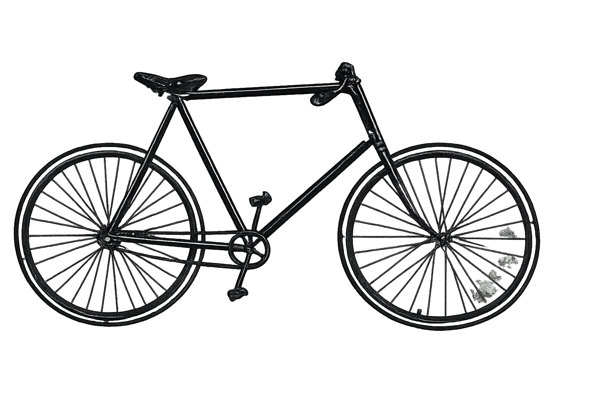
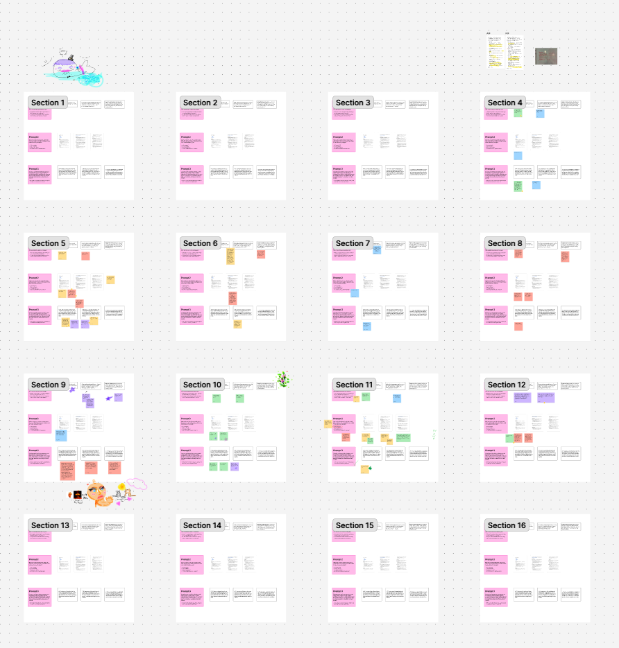
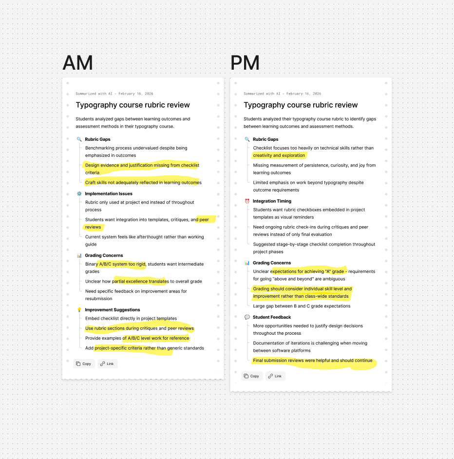
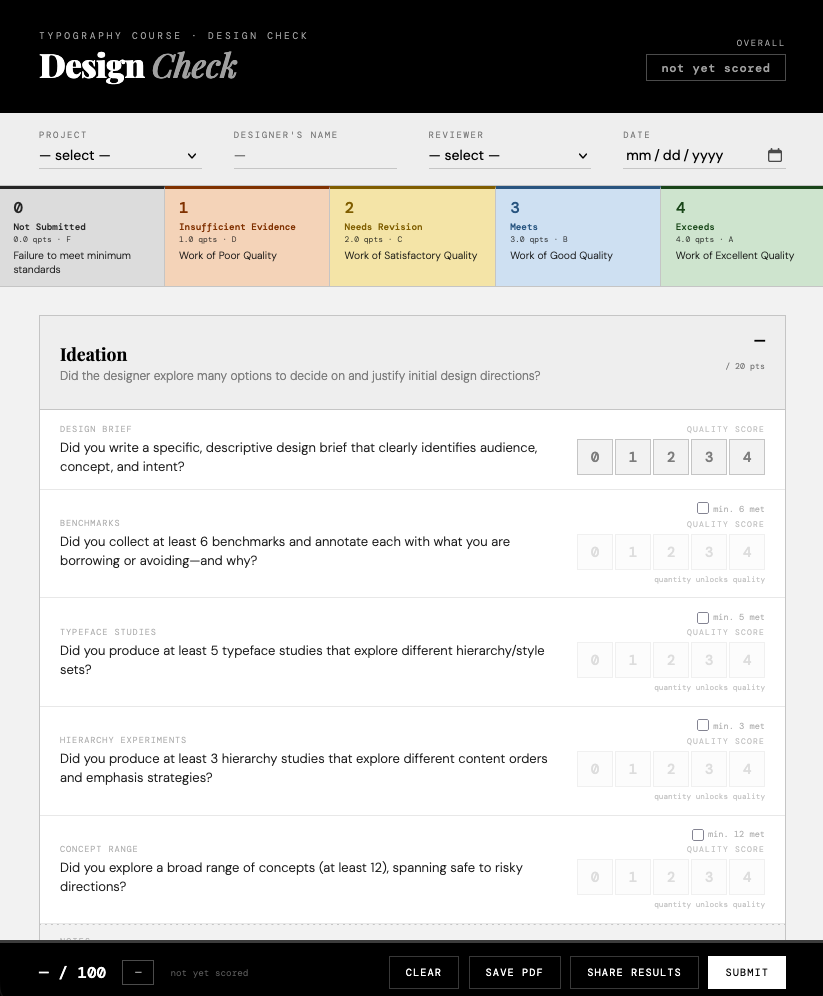
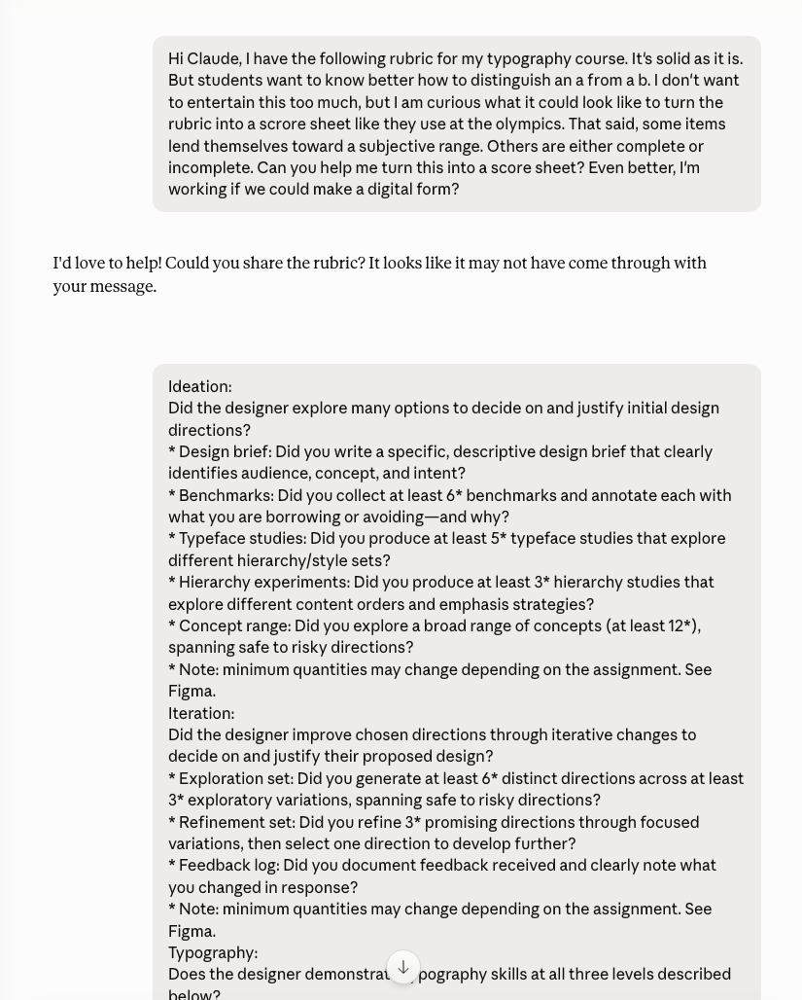
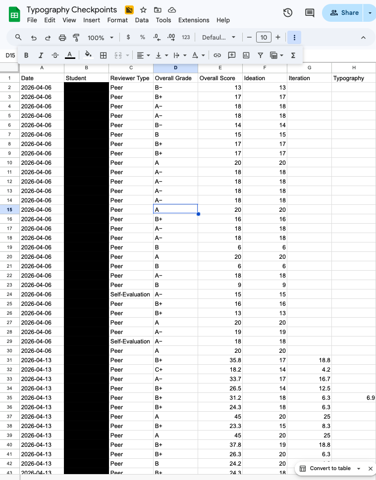
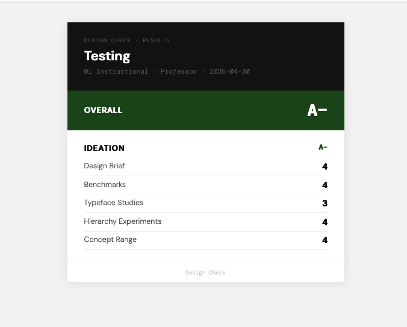
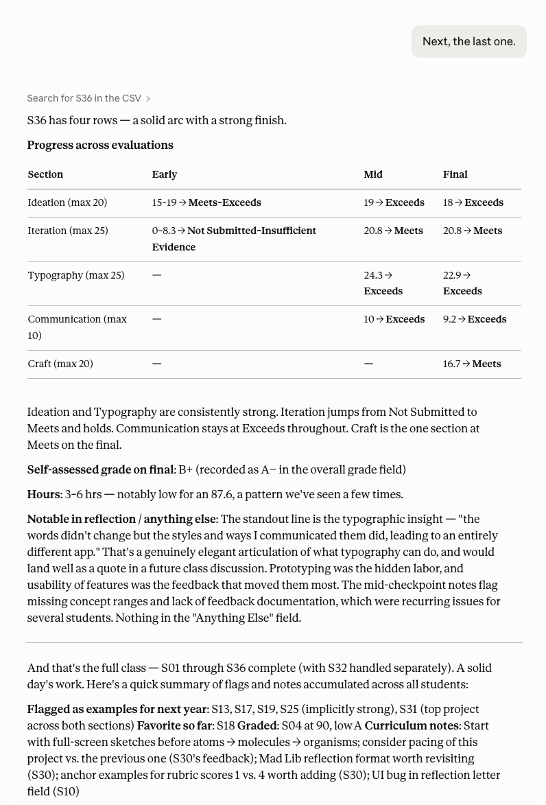

value-driven building
“Tools are mere transducers of the energy generated by man’s extremities and fed by the intake of air and environment.”
Use AI like a bicycle — not a car. It amplifies your energy. Your muscles still do the work.
“The classroom remains the most radical space of possibility in the academy.” — bell hooks


I ran co-design workshops — three of them. Students shaped how their work is evaluated.
More checkpoints with the rubric — not just at final critique, but throughout the process.
entering the world of vibe coding


My first vibe coding project. Interactive rubric — GitHub — Vercel — Google Sheets.
“It’s nice to know where I stand.”
Claude anonymizes, summarizes, and becomes a grading partner — not a replacement.


